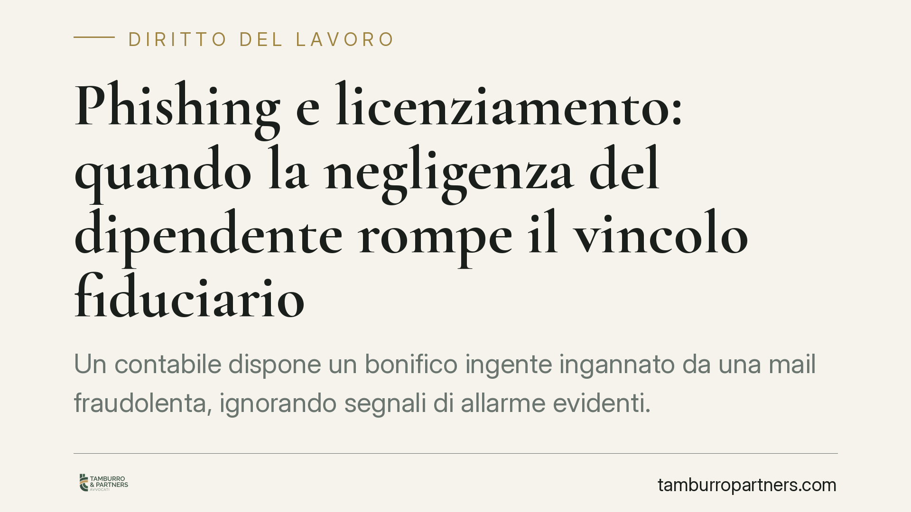

Phishing e licenziamento: quando la negligenza del dipendente rompe il vincolo fiduciario
Un contabile dispone un bonifico ingente ingannato da una mail fraudolenta, ignorando segnali di allarme evidenti. Secondo una recente ordinanza della Cassazione, il licenziamento per giusta causa può reggere: non conta l'inganno subito, ma la negligenza grave con cui il lavoratore ha agito. Una pronuncia che ridisegna i confini della responsabilità del dipendente di fronte alle frodi informatiche.

Il caso
Un dipendente addetto alla contabilità riceve una comunicazione fraudolenta — il classico schema di *phishing*, cioè l'inganno via e-mail con cui un truffatore si finge un soggetto affidabile per ottenere dati o disporre pagamenti. Convinto della genuinità della richiesta, il lavoratore ordina un bonifico di importo rilevante. Secondo i giudici, tuttavia, diversi segnali avrebbero dovuto insospettirlo: incongruenze nell'indirizzo del mittente, urgenza anomala della richiesta, deviazione dalle procedure ordinarie.
Il datore procede al licenziamento per giusta causa. La questione arriva in Cassazione, che conferma la legittimità del recesso. Il punto centrale non è l'essere caduti nella truffa, ma il come.
Inquadramento normativo
La giusta causa di licenziamento è disciplinata dall'art. 2119 cod. civ.: consente il recesso senza preavviso quando si verifica una causa che non consente la prosecuzione, nemmeno provvisoria, del rapporto. Si tratta di un giudizio che richiede la rottura irreparabile del vincolo fiduciario tra le parti.
Il parametro di condotta del lavoratore è fissato dall'art. 2104 cod. civ., che impone la diligenza richiesta dalla natura della prestazione. Per chi gestisce flussi finanziari, la soglia di attenzione esigibile è naturalmente più alta: maneggiare denaro altrui comporta un dovere di prudenza rafforzato.
Resta fermo il principio di proporzionalità sancito dall'art. 2106 cod. civ.: la sanzione deve essere adeguata alla gravità dell'infrazione. Qui i giudici hanno ritenuto che la negligenza, per intensità e conseguenze patrimoniali, superasse la soglia del rimprovero lieve, giustificando la sanzione espulsiva.
Sul piano probatorio opera l'art. 2697 cod. civ.: spetta al datore dimostrare i fatti posti a fondamento del licenziamento, cioè l'esistenza dei segnali di allarme e il loro mancato apprezzamento da parte del dipendente.
La ratio: inganno subìto o negligenza propria?
Il cuore della decisione sta in questa distinzione. Essere vittima di una frode non è, di per sé, un illecito disciplinare: nessuno risponde per il solo fatto di essere stato ingannato. Diverso è il caso in cui l'inganno riesce perché il lavoratore ha trascurato cautele elementari che la sua mansione imponeva.
La Cassazione valorizza un dato spesso dibattuto: l'eventuale assenza di formazione aziendale specifica sulle frodi informatiche non esclude automaticamente la responsabilità. La diligenza dell'art. 2104 c.c. è un dovere che prescinde dai corsi ricevuti, quando i segnali di anomalia sono riconoscibili con l'ordinaria prudenza richiesta dal ruolo. La formazione aziendale può incidere sulla valutazione, ma non costituisce una condizione preliminare della colpa.
*Avvertenza: trattandosi di pronuncia molto recente, invitiamo a verificarne gli estremi esatti sulle banche dati ufficiali prima di qualsiasi utilizzo in sede difensiva.*
Implicazioni pratiche
Per i datori di lavoro, la decisione conferma che le frodi informatiche possono fondare una contestazione disciplinare, ma solo se si prova la negligenza del dipendente e la riconoscibilità dei segnali di allarme. Non basta il danno subito: occorre documentare il profilo di colpa.
Per i lavoratori, soprattutto quelli che operano su flussi finanziari, cresce il livello di attenzione richiesto. Il rispetto delle procedure interne — richieste di conferma, doppi controlli, verifica dei mittenti — diventa la prima linea di difesa, anche sul piano disciplinare.
Resta sempre decisiva la valutazione in concreto: gli esiti dipendono dalla gravità dei segnali ignorati, dalle procedure aziendali esistenti e dalle previsioni del CCNL applicabile al rapporto in materia di sanzioni disciplinari.
Cosa fare in concreto
Per il datore di lavoro:
- Adottate procedure scritte per i pagamenti, con autorizzazioni a doppia firma e verifica obbligatoria dei mittenti.
- Documentate la formazione erogata e le istruzioni impartite: rafforza la posizione in caso di contestazione.
- Nella lettera di contestazione, descrivete con precisione i segnali di allarme ignorati, non il semplice esito del bonifico.
Per il lavoratore:
- Rispettate sempre le procedure interne e, nel dubbio, sospendete l'operazione e chiedete conferma per un canale diverso.
- In caso di contestazione, verificate con un legale se i segnali richiamati fossero realmente riconoscibili e se la sanzione sia proporzionata.
Disclaimer
Contributo informativo a cura di Tamburro & Partners Avvocati. Non costituisce parere legale.
Ogni storia di lavoro ha i suoi tempi.
Se gestisci HR e vuoi un confronto su contenzioso, ispezioni o licenziamenti, scrivi allo studio. Ti rispondiamo entro un giorno lavorativo.